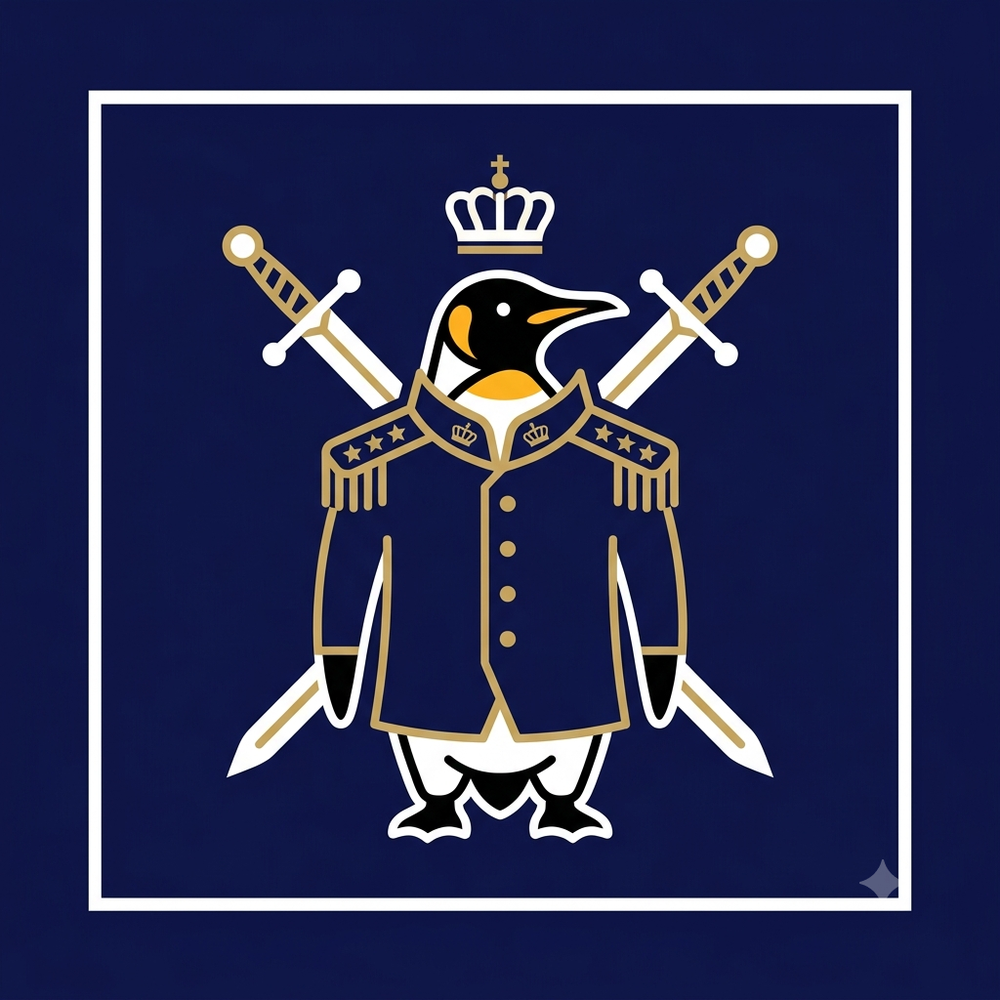
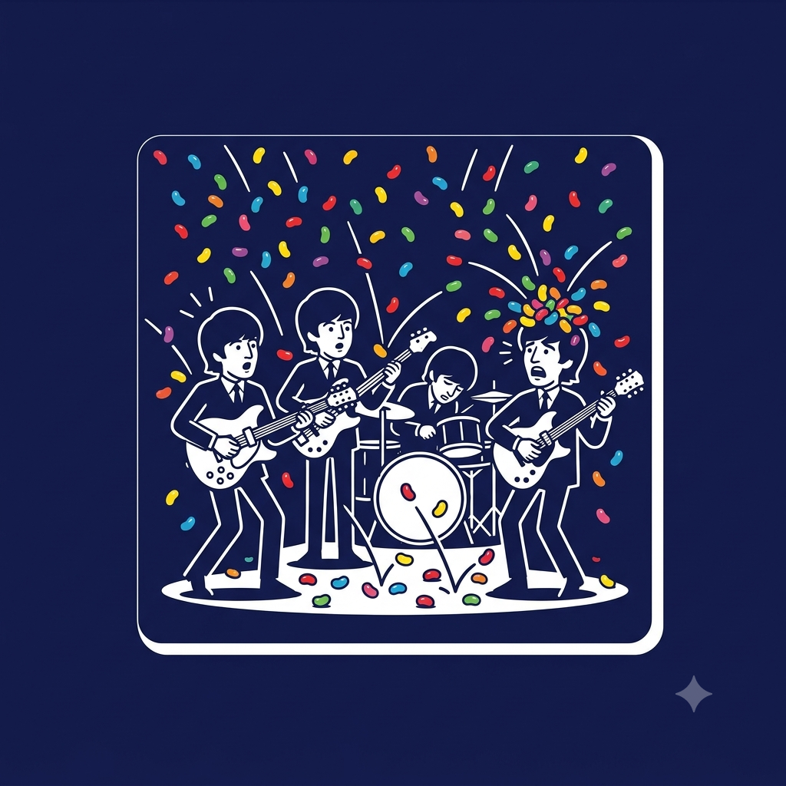

Meu primeiro post
Por Ester C. Machado
Vou comentar um pouco sobre tudo, fatos históricos, curiosidades do rock e para acompanhar uma dose de café
O Exército que Voltou Maior do que Partiu
Por Ester C. Machado
Em 1866, durante a Guerra Austro-Prussiana, o minúsculo principado de Liechtenstein enviou seu modesto exército de apenas 80 soldados para guardar uma passagem estratégica nas montanhas entre a Áustria e a Itália. Para a imensa sorte dos envolvidos, a tropa não presenciou nenhum combate real. Em vez de enfrentar batalhas intensas, os soldados passaram a maior parte do tempo apreciando o ar puro dos Alpes, tomando vinho e relaxando enquanto acompanhavam os desdobramentos do conflito bem de longe.FONTE:wikipedia e brasil escola.
O ápice dessa "operação militar" aconteceu no caminho de volta para casa. Ao marcharem de regresso à capital, o governo fez a contagem oficial das tropas e se deparou com um detalhe inusitado: 81 homens retornaram. Liechtenstein conseguiu o feito inédito de terminar uma guerra com um saldo positivo de soldados, pois a tropa fez amizade com um oficial austríaco pelo caminho e o convidou para se juntar a eles. Pouco tempo depois, o país decidiu dissolver de vez suas forças armadas, aposentando sua trajetória militar de forma lendária e sem nenhuma baixa.

Sir Nils Olav: O Pinguim que Virou Brigadeiro do Exército
Por Ester C. Machado
Em 1972, a Guarda Real da Noruega visitou o Zoológico de Edimburgo, na Escócia, e se apaixonou por um simpático pinguim-rei chamado Nils Olav. Encantados com a postura ereta e o caminhar elegante da ave, os soldados decidiram adotá-lo formalmente como o mascote oficial da unidade. A partir daquele momento, a cada nova visita da tropa à cidade para festivais militares, Nils Olav recebia uma promoção simbólica, subindo gradualmente os degraus da hierarquia militar norueguesa.
Ao longo das décadas, o ilustre pinguim continuou sua ascendência impecável até ser formalmente condecorado como Cavaleiro e, eventualmente, atingir o posto de Brigadeiro. Atualmente, Nils Olav III cumpre seus deveres inspecionando a guarda em trajes impecáveis — sua própria plumagem preta e branca —, enquanto soldados de verdade prestam uma solene continência para a ave mais respeitada e bem-vestida das forças armadas.

Guerra de Jujubas: O Dia em que os Beatles Viraram Alvo de Doces
Por Ester C. Machado
Em 1963, durante uma entrevista informal, George Harrison comentou inocentemente que gostava de jelly babies, um tipo de bala de goma muito popular no Reino Unido. O que parecia apenas um detalhe irrelevante virou um pesadelo cômico nos palcos: milhares de fãs entenderam a fala como um pedido e começaram a arremessar quilos do doce na banda durante os shows. A situação ficou ainda pior na turnê pelos Estados Unidos, onde o público não encontrou as balas macias e as substituiu por jelly beans, que eram duras e machucavam bastante.
As apresentações do quarteto de Liverpool rapidamente viraram verdadeiras batalhas campais de açúcar. Os músicos precisavam tocar se esquivando de projéteis coloridos voando em direção a suas cabeças e guitarras. George admitiu mais tarde que os doces pareciam "balas de verdade", enquanto Ringo Starr passava os shows tentando se esconder atrás dos pratos da bateria para sobreviver ao carinho doloroso da plateia.
Tesouros do Fundo do Mar
Por Ester C. Machado
Em 1968, durante um período de intensa pressão nos estúdios, Ringo Starr decidiu dar uma pausa nos Beatles e viajou para a Itália no iate do ator Peter Sellers. Durante um almoço a bordo, o capitão serviu polvo e começou a compartilhar um detalhe fascinante sobre a criatura: esses animais marinhos passam os dias percorrendo o leito do oceano em busca de pedras brilhantes, conchas reluzentes e pequenos tesouros perdidos. Com esses achados, eles constroem minuciosamente seus próprios jardins secretos ao redor de suas cavernas para proteger e enfeitar suas casas.
Tocada por essa imagem singela de um pequeno refúgio de beleza escondido sob as ondas, a imaginação de Ringo se acendeu no meio de uma fase conturbada. Ele pegou um violão e começou a compor os primeiros versos da inesquecível "Octopus's Garden", imaginando como seria acolhedor esconder-se do mundo em um lugar calmo ao lado de quem se ama. A canção acabou se tornando uma das faixas mais carismáticas do álbum Abbey Road, imortalizando a doçura desse hábito marinho e provando como um momento de paz pode nascer da forma mais inesperada.
"Mais Populares que Jesus": A Polêmica que Mudou a História dos Beatles
Por Ester C. Machado
Em março de 1966, John Lennon provocou a maior controvérsia da história dos Beatles ao afirmar, durante uma entrevista, que a banda havia se tornado "mais popular que Jesus Cristo". Na visão do músico, o cristianismo estava em declínio e a juventude da época se conectava mais com a música do quarteto de Liverpool do que com a religião. Embora a declaração tenha passado quase despercebida no Reino Unido, sua republicação nos Estados Unidos meses depois desencadeou uma onda de revolta, especialmente no conservador sul americano.
A reação contra o grupo foi agressiva: rádios locais baniram os sucessos da banda, multidões organizaram fogueiras públicas para queimar discos e o grupo chegou a ser ameaçado pela Ku Klux Klan. A tensão culminou na turnê norte-americana de 1966, onde a sensação de insegurança constante nos palcos desgastou os integrantes. Esse episódio foi um dos fatores determinantes para que os Beatles tomassem a decisão radical de abandonar as turnês ao vivo naquele mesmo ano, migrando seu foco exclusivamente para o trabalho em estúdio.